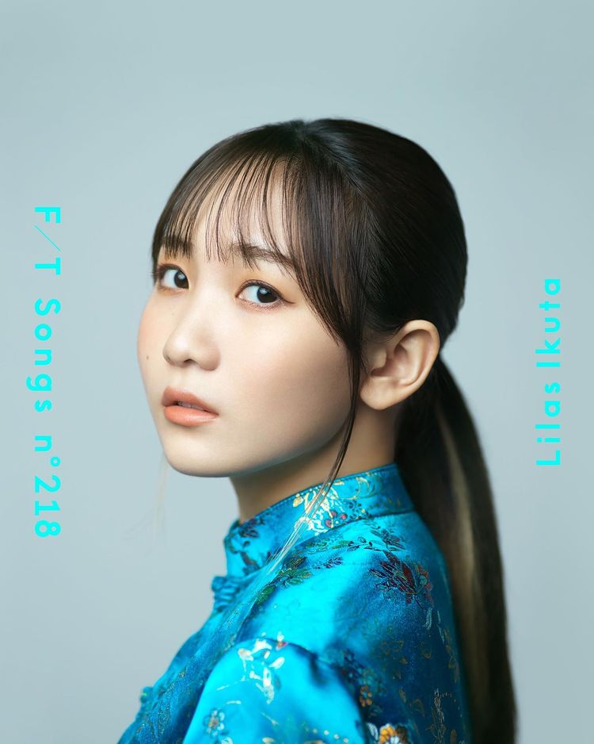
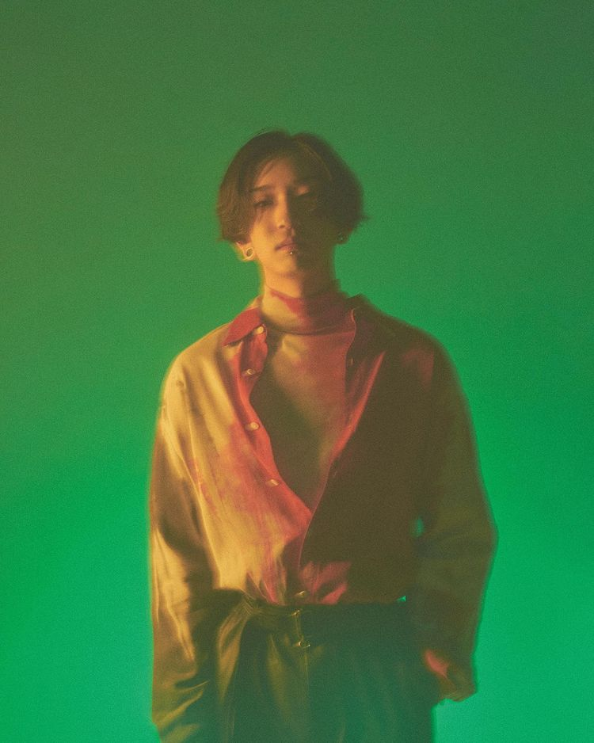

Members
Ikura - vocal Born on September 25, 2000 in Tokyo. She is active as a singer-songwriter "Ikuta Rira," and her song "Answer," released in March 2021, was used as the commercial song for Tokio Marine & Nichido Anshin Life's "Anshin Jobless Insurance. She is also active in a variety of fields, including her first voice acting role as Suzu's best friend in Mamoru Hosoda's film "The Dragon and the Freckled Princess," which opened in theaters on July 16, 2009.
Ayase - producer (lyrics, composition, arrangement, synthesizer, keyboard, sampler, manipulator) Ayase was Born on April 4, 1994 in Yamaguchi, Japan, he began posting VOCALOID songs in December 2018. He has gained popularity for his sad and melancholy melodies and thought-provoking lyrics. His "Last Resort" released in April 2019 has over 13 million views on YouTube. his first EP "Ghost Tokyo" released in November 2019 was immediately sold out. He is also known for his self-covers of Vocaloid songs sung by himself, and "Ghost Tokyo" and "Night Stroking Menou" have surpassed 19 million and 22 million views, respectively. In addition to his activities as a Vocaloid P and composer for YOASOBI, he also provides songs for various artists.
Supporting members: Zaquro Misohagi - keyboard chorus AssH - guitar Honogomu - drum Hikaru Yamamoto - bass